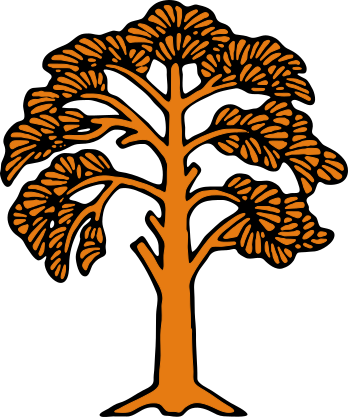

// systems online
Jayden Steadman-Jeffrey
|
Software & ML engineer. Projects hang here like leaves — each one a small, working thing.
01 About
I like building things that work end-to-end and don't leak data they don't need to — local-first ML pipelines, small tools that solve a real annoyance, and the unglamorous DevOps plumbing that makes a project count as "done" rather than "works on my machine." My focus areas are multimodal engineering — systems that reason across text, audio, and vision at once — and frontier AI, where I spend my own time reading and experimenting with what's next rather than just what already works. Everything below is either live right now or was, at some point, running in production for a real user.
02 Featured builds
Projects that don't live in a public repo, or that deserve more than a card can say.
03 GitHub repos
Pulled live from the GitHub API — this list updates itself every time you load the page.
04 Contact
Best way to reach me, or just poke around the code.